Handgjorda keramikfat från Mora
Vi är fyra tjejer som kavlar, formar och glaserar varje fat själva. Därför blir inga två exakt likadana.
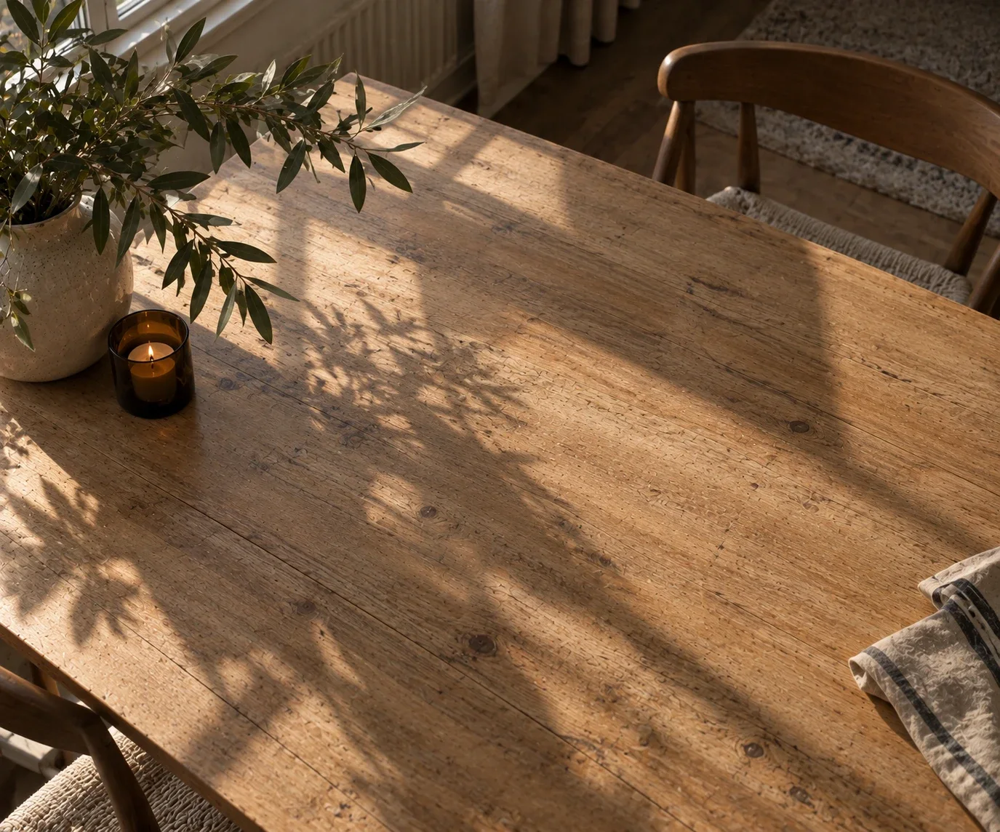
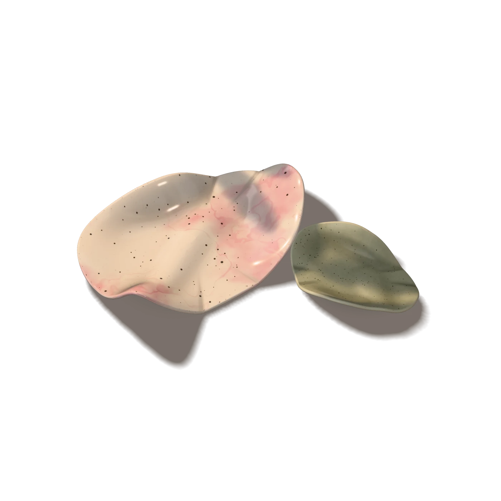
Vika och Hemus
Faten
Fyra former, var och en i tre glasyrer. Tryck på ett fat för att se det från alla håll. Varje fat är gjort för hand, så ditt blir lite olikt det du ser här.
- Frakt 39 krPostNord, vi skickar inom 2 vardagar
- Kort, Klarna eller Swishi Stripes säkra kassa
- 14 dagars ångerrättallt står i köpvillkoren
-
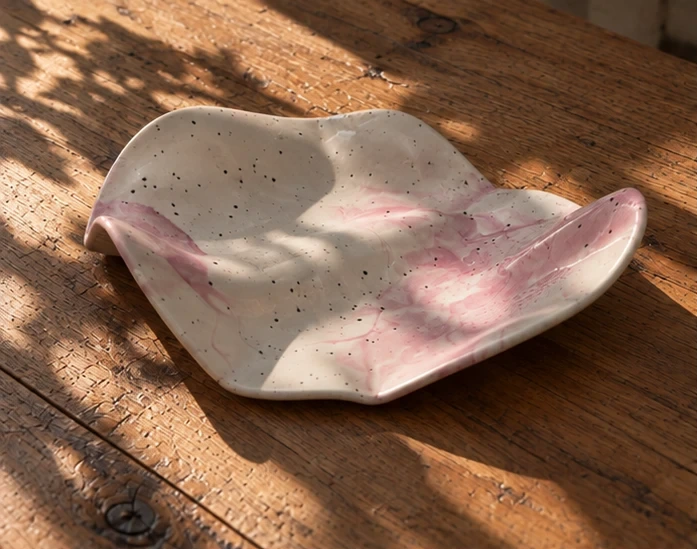
Rosa marmor -
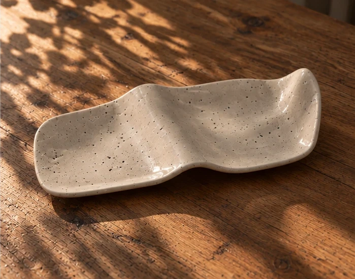
Sand -
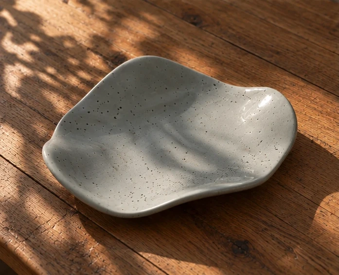
Dimblå -
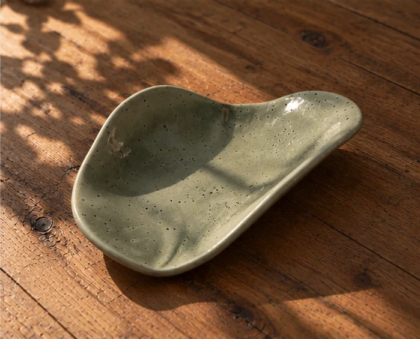
Salviagrön
På nära håll
Prickarna kommer från järn i leran som tränger upp genom glasyren i ugnen. Därför får varje fat sitt eget mönster.
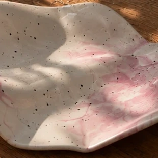
VikaVit med rosa marmor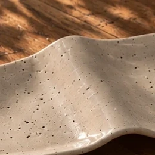
GesundaSand med prickar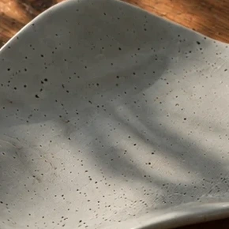
SiljanDimblå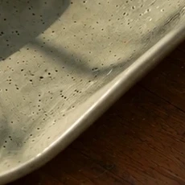
HemusSalviagrön
Så gör vi ett fat
Från lerklump till färdigt fat tar det ett par veckor. Scrolla för att följa ett av dem genom alla steg.
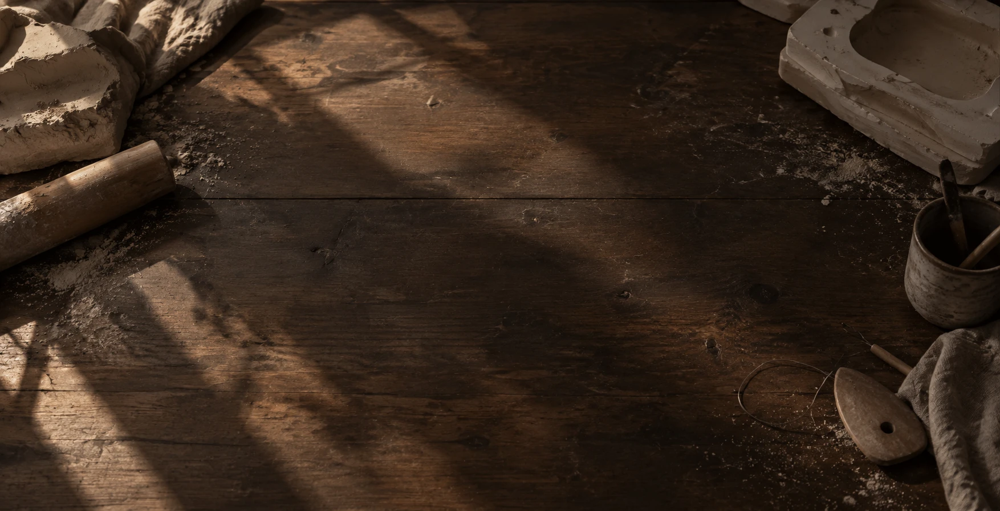
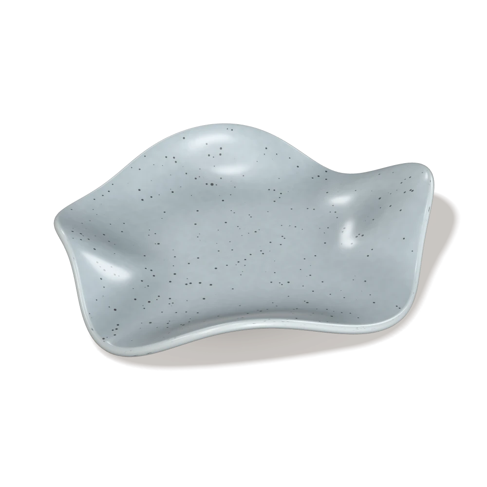
-
Kavla
Vi kavlar ut leran till en jämn platta, ungefär en halv centimeter tjock. Det är därför det ligger en kavel i vår logga.
-
Forma och stämpla
Vi skär ut formen för hand och lägger plattan över en form, så att den får sina vågor. Under varje fat trycker vi in vår stämpel.
-
Torka och bränna
Fatet torkar långsamt i ungefär en vecka, från kanterna och inåt. Sedan bränns det en första gång och blir hårt och ljust.
-
Glasera
Vi doppar fatet i glasyr. Innan den andra bränningen är glasyren blek och matt, nästan som krita.
-
Bränna igen
I den andra bränningen, på över tusen grader, smälter glasyren till en hård yta och får sin riktiga färg. Sedan är fatet klart.

Vi som gör faten
Artera är ett UF-företag från Mora. Vi är Meja, Nora, Embla och Lilly, och vi gör varje fat själva, från lerklump till glasyr.
Eftersom allt görs för hand blir faten lite olika. En kant kan luta åt ena hållet och glasyren kan rinna längre ner på ett fat än på ett annat. Vi tycker att det är just det som gör dem fina.
Nya fat visar vi först på Instagram, @arterauf.
Frågor och svar
När kommer mitt fat?
Vi skickar inom 2 vardagar med PostNord, väl inpackat. Frakten kostar 39 kr och vi skickar bara inom Sverige.
Hur betalar jag?
Med kort, Klarna eller Swish. Du lägger faten i kundvagnen och betalar i en säker kassa hos Stripe. Vi ser aldrig dina kortuppgifter, och kvittot kommer till din mejl.
Ser mitt fat ut exakt som på bilden?
Nästan. Varje fat är gjort för hand, så formen och glasyren skiljer sig lite från fat till fat.
Hur sköter jag fatet?
Diska det för hand med lite diskmedel och låt det torka. Undvik att tappa det på stengolv, det är fortfarande keramik.
Kan jag ångra mitt köp?
Ja, du har 14 dagars ångerrätt. Allt om returer och reklamationer står i våra köpvillkor.
Kontakt
Har du en fråga om ett fat eller en beställning? Skriv här så svarar vi så snart vi kan. Du når oss också på Instagram, @arterauf.